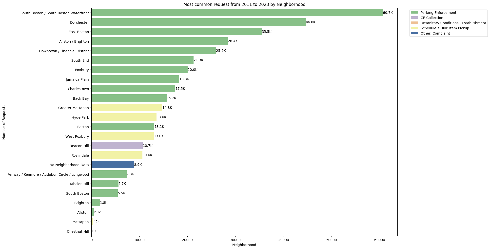

Since the entries in data are incosistent and we had to modify a few things
- Added Resolution Time Column
- Changed all negative values in Resolution Time column to be equal to 0
- Combined NAN and ' ' (space character string) value in neighborhoods into one unique name 'No Neighborhood Data'
- For questions that invlove QUEUE, we had to apply custom grouping for queues in PWDx department, where needed. (The Group Name was a keyword that appeared the most in distinct queues, i.e. group district invloves all the queues where district was the dominant keyword)
PowerBI
Link to PowerBI Report
Link: https://app.powerbi.com/reportEmbed?reportId=41b83596-6c42-48c1-9d28-9b7e48622637&autoAuth=true&ctid=8826d2d1-cf01-4ed7-8ba7-baa6f836f7a5
PowerBI work was done by a different memeber, and some slight differences in data processing still exist.
- Resolution time column exists, but it is a double type column, that refers to days. Negative values are still changed to 0.
- Queue grouping was not changed.
- The text in closure reason was changed to a single word based on a combination of data exploration and the provided data dictionary.
What is the total volume of requests per year, or how many 311 requests is the city receiving per year?
Which service requests are most common for the city overall AND by NEIGHBORHOOD and how is this changing year over year by SUBJECT (department), REASON,QUEUE?
Overall

By Neighborhood

By SUBJECT

By REASON

By QUEUE
How is the case volume changing by submission channel SOURCE?

Yearly Volume By Source
What correlation does Zip Code and Source carry?

Volume of top 5 request types (TYPE)

Volume of top 5 by Zip Code
Average goal resolution time by QUEUE
Average goal resolution time by QUEUE and neighborhood

Average goal resolution time by Zip Code
What % of service requests are closed (CLOSED_DT or CASE_STATUS) vs. no data (CASE_STATUS = null) vs. unresolved (CASE_STATUS = open)?
Overall
By Year

By Year (proportion)